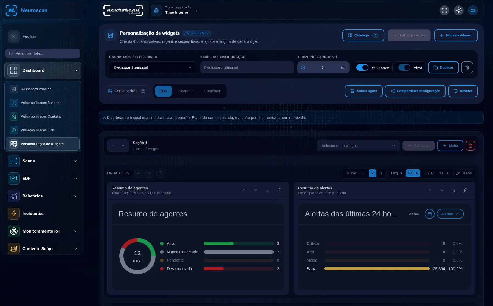
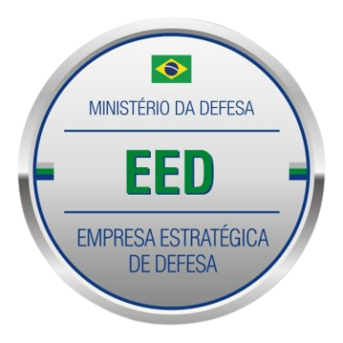
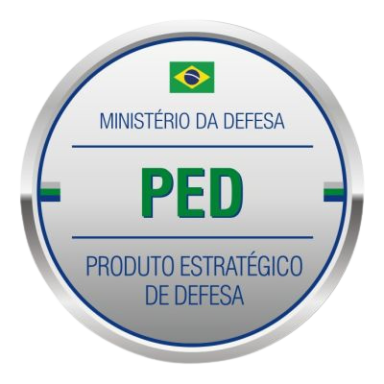

Monitoramento contínuo
Visibilidade sobre redes, servidores e dispositivos para acompanhar o seu ambiente.
Antecipe ameaças. Conecte sua segurança.
Tecnologia própria e
especialistas para proteger
o que move o seu negócio.
Monitore o ambiente, identifique vulnerabilidades e coordene a resposta a incidentes em uma única plataforma.
O Neuroscan integra tecnologias de mercado e recursos desenvolvidos pela Black Ice. A equipe acompanha riscos, acessos e eventos de segurança sem depender de uma visão fragmentada da operação.

Conheça os recursos para identificar riscos, responder a incidentes e administrar a proteção do ambiente.
Visibilidade sobre redes, servidores e dispositivos para acompanhar o seu ambiente.
Identifique fragilidades em sistemas, aplicações web e infraestrutura.
Acompanhe a exposição de credenciais e possíveis vazamentos de dados sensíveis.
Analise informações externas para reconhecer sinais e antecipar ameaças.
Avalie a resiliência da operação com testes controlados de DDoS e phishing.
Reúna o controle de usuários, autenticação e auditoria em um só lugar.
Integre e orquestre ações para responder a incidentes com mais agilidade.
Correlacione logs e eventos críticos para investigar o que acontece na sua rede.
Fortaleça a proteção de acessos com FIDO2, criptografia e blockchain.
Transforme dados técnicos em informações claras para apoiar suas decisões.
Especialistas dedicados à segurança e à infraestrutura que sustentam sua organização.
Detecção, investigação e resposta a ameaças. Nossa equipe acompanha os riscos e os incidentes de segurança da sua organização.
Acompanhamento da infraestrutura para identificar falhas e apoiar a disponibilidade dos sistemas da sua operação.
Profissionais com certificações CISSP, ISFS, CEH, CompTIA, CISM e CRISC.
Consultar serviçosTecnologia brasileira reconhecida pelo Ministério da Defesa.

Empresa Estratégica de Defesa
Produto Estratégico de DefesaFundada por Wanderley Abreu Jr., conhecido como Storm.
A empresa nasceu de uma trajetória de pesquisa e experiência em segurança cibernética. Desenvolve tecnologia própria e atua na proteção de empresas e instituições públicas.
Com sede no Rio de Janeiro e especialistas em diferentes regiões do país, a Black Ice atende em todo o território nacional.
Uma empresa do Grupo Storm.
Sim. A empresa tem sede no Rio de Janeiro e conta com especialistas em diferentes regiões do país, atendendo empresas e instituições públicas em território nacional.
Entre em contato com a equipe comercial para apresentar seu ambiente e seus desafios. Você pode solicitar uma apresentação do Neuroscan ou conversar sobre a implantação e a operação de SOC e NOC.
Entrar em contatoApresente seu ambiente e o que precisa proteger. A equipe comercial orienta sobre a plataforma e os serviços.
Preencha abaixo para preparar uma mensagem no seu aplicativo de e-mail.
Abra seu aplicativo para conferir a mensagem e concluir o envio.
Abrir aplicativo de e-mail